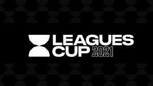
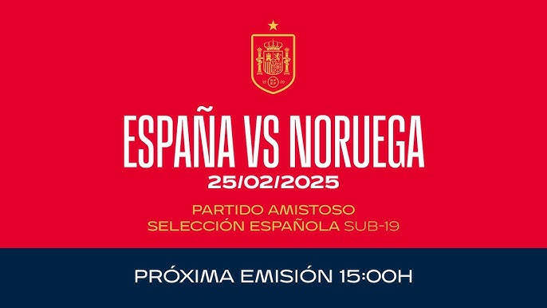
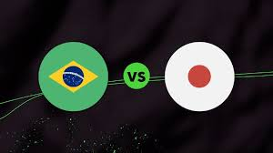
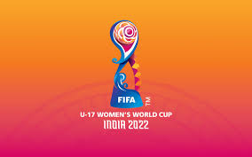
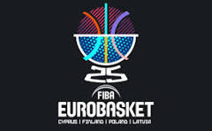
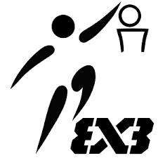
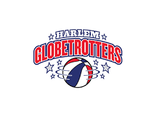

En esta sección encontrarás el calendario deportivo actualizado de los torneos, partidos y competencias más importantes de fútbol y baloncesto. Nuestro objetivo es que no te pierdas ningún encuentro relevante y que tengas a la mano toda la información que necesitas
Cada evento incluye:
Desde partidos amistosos hasta competencias internacionales, ligas locales y copas que mueven a millones de fanáticos en todo el mundo.
Este domingo, 31 de agosto de 2025
Local: Seattle Sounders FC
Visitante: Inter Miami CF
Lugar: Lumen Field, Seattle, Washington
31 de agosto al 10 de septiembre de 2025
Local: Real Madrid, FC Barcelona, Atlético de Madrid, Sevilla FC, Real Betis, Córdoba CF.
Visitante: River Plate, Palmeiras, Corinthians, Sporting de Portugal, Benfica, AC Milan.
Lugar: Córdoba, España.
10 de octubre de 2025
Local: España Sub-21
Visitante: Noruega Sub-21
Lugar: Pedro Escartín
El domingo 14 de octubre de 2025
Local:Japón
Visitante:Brasil
Lugar:Estadio Nacional de Japón
17 de octubre al 8 de noviembre de 2025.
Local:Marruecos
Visitante:UEFA(Europa), CONMEBOL(Sudamérica), CONCACAF(Norteamérica, Centroamérica y Caribe), CAF(África), AFC(Asia), OFC(Oceanía)
Lugar:Estadio Olímpico de Rabat, Al Barid Stadium
partidos de selecciones, torneos juveniles, ligas profesionales y los enfrentamientos que marcan la historia del deporte.
31 de agosto de 2025
Local: Francia
Visitante: Israel
Lugar: Katowice, Polonia
1 al 4 de septiembre de 2025
Local: depende del cruce
Visitante: depende del cruce
Lugar: Varias ciudades sedes (Polonia, Finlandia, Letonia, Chipre)
del 6 al 7 de septiembre de 2025
Local: equipo clasificado 1° de grupo
Visitante: equipo clasificado 4° de grupo
Lugar: Riga, Letonia
del 5 al 7 de septiembre de 2025
Local: Selecciones participantes
Visitante: Selecciones participantes
Lugar: Copenhague, Dinamarca
Domingo 14 de diciembre de 2025
Local: Harlem Globetrotters
Visitante: Washington Generals
Lugar: Madison Square Garden, Nueva York
El deporte se vive en cada segundo y sabemos que seguir los partidos es parte de la pasión. Ya sea que quieras planear tu fin de semana, apoyar a tu equipo favorito o simplemente estar al tanto de lo que ocurre, aquí encontrarás toda la información organizada y clara.
Mantente conectado porque cada semana actualizamos la lista de encuentros. ¡No dejes que te cuenten los resultados, vive el deporte con nosotros!